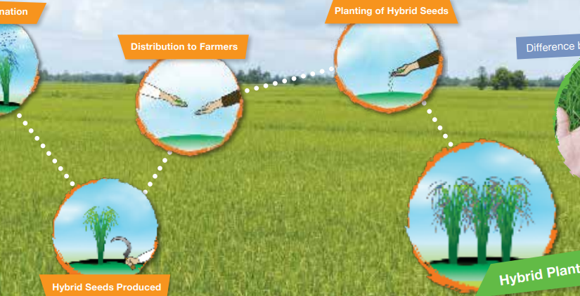

HYBRID CROPS
What Are Hybrid Crops?
Hybrid crops are the result of cross-breeding two different plant varieties to produce offspring with specific desirable traits. This process, known as hybridization, combines the strengths of both parent plants to create hybrids that often outperform either parent in various characteristics.
Production of Hybrid Crops
- Parent Selection: Two genetically diverse parent plants with desirable traits are selected.
- Cross-Pollination: These plants are cross-pollinated to produce seeds. This can be done through natural methods or controlled pollination.
- Seed Production: The resulting seeds from the cross-pollination are planted, and the hybrid offspring are evaluated for performance and traits.
- Commercialization: Successful hybrids are then multiplied and marketed to farmers.
Advantages of Hybrid Crops
- Higher Yields: Hybrid crops typically produce more than traditional varieties, helping to increase food production.
- Disease Resistance: Many hybrids are bred for resistance to diseases and pests, reducing the reliance on chemical pesticides.
- Improved Quality: Hybrids can have better taste, nutritional content, and shelf life compared to traditional crops.
- Environmental Adaptability: Hybrids can be designed to thrive in specific climatic conditions, such as drought or flooding.
- Faster Growth: Some hybrids mature more quickly, allowing for multiple harvests in one growing season.
Disadvantages of Hybrid Crops
- Seed Dependency: Farmers often need to buy new seeds each year, as hybrids do not produce seeds that replicate the same traits.
- Cost: Hybrid seeds can be more expensive than traditional seeds, impacting small-scale farmers.
- Loss of Biodiversity: The focus on a limited number of hybrid varieties can reduce genetic diversity in agriculture.
- Limited Adaptability: Some hybrids may not perform well in conditions different from those for which they were specifically bred.
Conclusion
Hybrid crops are an essential innovation in agriculture, contributing to increased food production and sustainability. While they offer significant benefits, challenges such as seed dependency and biodiversity loss must be considered in their use. Understanding hybrid crops is crucial for farmers, policymakers, and consumers as we navigate the future of food security and sustainable farming practices.